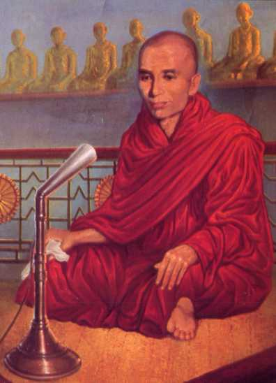

Mingun Sayādaw A Fabulous MemoryThe Guinness Book Records of 1985 has this entry: Human memory: Bhandanta Vicitsara (sic) recited 16,000 pages of Buddhist canonical texts in Rangoon, Burma in May 1954. Rare instance of eidetic memory the ability to project and hence "usually" recall material are known to science. The Venerable Mingun Sayadaw U Vicittasarabhivamsa was the first even in Buddhist lands to win the titles Tipitakadhara Dhammabhandagarika (Bearer of the Three Pitakas and Keeper of the Dhamma Treasure). In 1948, the first year of independence from British rule, the Government considered the need to purify, perpetuate and propagate the Sāsana. To promote the emergence of a heroic Sāsana personality with the ability to memorize and recite by heart the whole of the Pāli Canon — the Tipitaka — and to seek out personalities with special intellectual powers to receive the reverence and praise of the devotees, the Government decided to institute the Tipitakadhara Examination. It is an oral and written examination lasting thirty-three days. The candidate is examined in the three Pitakas: Vinaya, Sutta, and Abhidhamma. The oral examination in the Vinaya covers five volumes in five books comprising 2,260 pages. The oral examination in the Sutta covers three volumes and three books comprising 782 pages. The oral examination in Abhidhamma covers seven volumes in twelve books comprising 4,941 pages. The oral examination on these 7,983 pages or about 2.4 million words is not a viva voce, a question and answer examination. It is an examination on total recall and faultless reproduction. The Candidate will be given a pointing to the Pāli Canon, any point, and asked to continue reciting from there, line by line, paragraph by paragraph and page by page. Or he would be given a point and asked to go back from there a certain number of sections and to recite from there. There must be no error in the word form, the pronunciation must be correct, the flow must be smooth, and the enunciation must demonstrate the proper understanding of the meaning of the passage being recited. A certain number of pages of text must be covered in a fixed time. A candidate who requires prompting for five or more time fails. The written examination is not only on the Pāli Canon but also on the Commentaries and Sub -commentaries. The ten major commentaries in ten books and the major Sub-commentaries in fourteen books cover 17,917 pages. Candidates are tested on the doctrinal understanding, comparative philosophy, textual discrimination, taxonomic grouping and analysis and on the interrelationships. Though candidates are not expected to reproduce whole passages as in the oral examination, many of the questions cannot be answered without the ability to recall such passages and to compare diverse passages mentally at the examination desk. Thus, the Tipitakadhara Examination is one of the longest and toughest examinations in the world. When the first Tipitakadhara Examination was held, the Venerable Mingun Sayādaw was one of over one hundred monks invited to observe the proceedings. When the result was a disappointment with no candidate successful, he resolved to repay the nation's debt in search of a hero of the Pariyatti Sāsana. He set about the task systematically. He took up the Pāli Canon passage by passage, book by book. He first set out to understand the passage thinking in Myanmar and in Pāli. He broke the passage into sentences, paragraphs or sections according to the degree of difficulty. If necessary, he noted the number of modifications and variations in the selected pieces. He read aloud each section five times, then closing the book, he repeated what he had just recited. If he was hesitant or felt he had not mastered the passage he would open the book and read aloud five more times. If it was recalled smoothly he would recite it ten times and then pass on to the next passage. In the evenings when reciting the day's passages he would not do it alone but request some other monk to check with the open book. This ensured that he did not pass over any word, phrase or sentence and that each declension was correct. When two or three books had been mastered he would set aside each evening two or three periods required for their recall and recitation. The intention was to go through the finished books simultaneously so that the mind would be active in all the books at the same time and all interrelationships would be discerned. The Venerable Mingun Sayādaw also trained for the physically gruelling examination. Where an oral session would last for three hours he would practice reciting for five, thus accustoming himself to a test of ten hours a day. And he would do this for longer than the stretch of 33 days of the examination. He trained likewise for the written examination. When the Third Tipitakadhara Examination came around in 1950, the Venerable Mingun Sayādaw was ready to repay the debt to the devotees of the nation. He appeared for the oral examination on 2,260 pages of the Vinaya Pitaka. In a clear, firm voice, unhesitatingly, without error, without prompting, with full understanding, he precisely enunciated each word and phrase audible to the whole audience. When there were different versions he pointed each out and suggested the most suitable one. The virtuoso performance received the appreciation and acclamation of the audience. In the written examination in the Pāli text, Commentaries, and Sub-commentaries on the Vinaya, the Venerable Mingun Sayādaw received the following marks out of a possible 100. Pārājika 98 In the Fourth and Fifth Examinations, the Venerable Mingun Sayādaw appeared for the oral and written examinations on the Abhidhamma and passed with equal facility. By that time, preparations for the Sixth Buddhist Council were underway. The Venerable U Vicittasārābhivamsa was a member of the Regional Mūla Pāli Visodhaka, Primary Redaction Committee responsible for the Mahāvagga section of the Vinaya Pitaka. He completed the work in 19 days so his regional committee was further assigned the Parivāra. This too was finished expeditiously. In undertaking the assignments, the Venerable Sayādaw did not just read through the texts with the committee but sought out the different versions, brought out the reference in the Commentaries and Sub-commentaries, explained the implications to the clear understanding of the committee members, sought a unanimous conclusion and wrote the report. The Venerable Sayādaw also participated in the next higher redaction Committee, the Pati Pāli Visodaka Committee. In sessions of the Committee, Myanmar monks who were well-versed in the Pāli texts, but not proficient in the language, and Sri Lanka monks who were proficient in the language, but not so well-versed in the texts could not get the understanding of each other. When such occasions arose, the Venerable Mingun Sayādaw would respectfully and pleasantly explain the issue and possible solution to each side and thus arrive at a satisfactory understanding. Observing the performance of the Sayādaw, the Sri Lanka monks would say, “There is none such in Sri Lanka, there is none such in Jambudīpa.” The venerable Sayādaw returned to his monastery in Mingun and worked on the Commentaries and Sub -commentaries. He foresaw that after redaction the Pāli Canon, the Commentaries and Sub-commentaries would follow. At the same time he had to prepare for the Tipitakadhara Examination on the third and final Pitaka. He was not unduly worried. After the voluminous prescriptions of the Vinaya and Abhidhamma, the less than 800 pages of the Sutta Pitaka were not onerous. On a January afternoon in 1954, the Venerable U Vicittasārābhivamsa successfully completed the recitation of the Pāthika Vagga of the Sutta Pitaka and a Tipitakadhara Dhammabhandāgārika was born in Myanmar. Written by Win Pe
|
| ||||||||||||||||||||||||||||||||||||||||